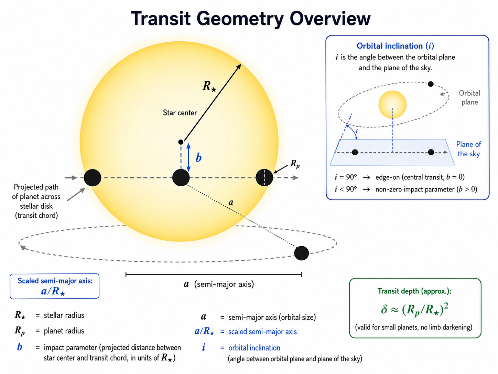
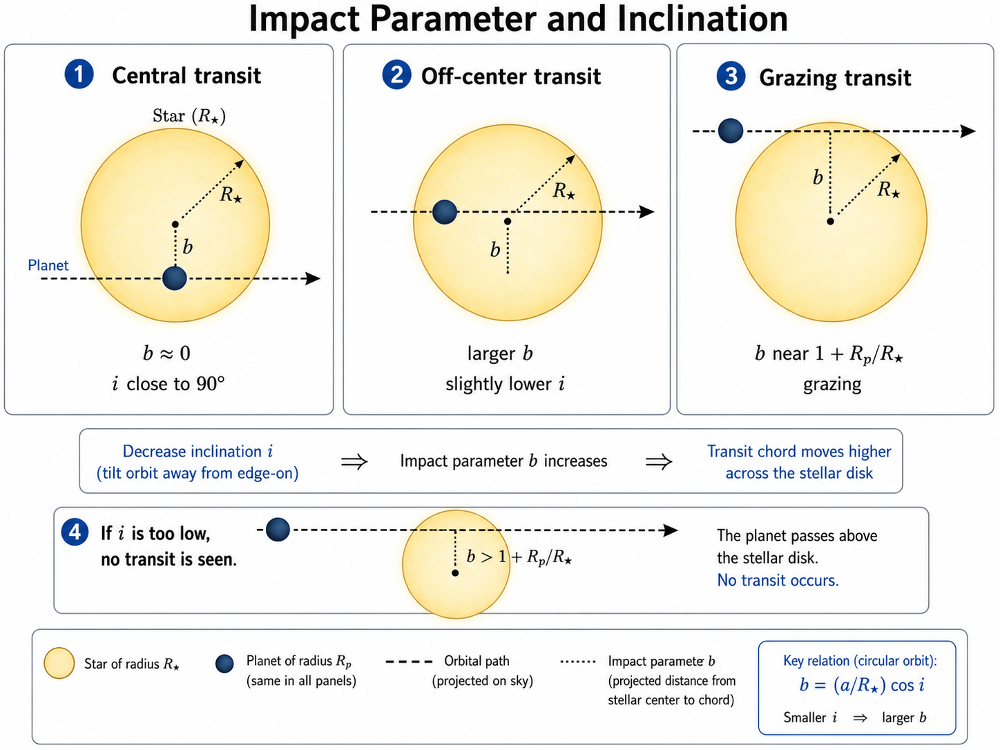
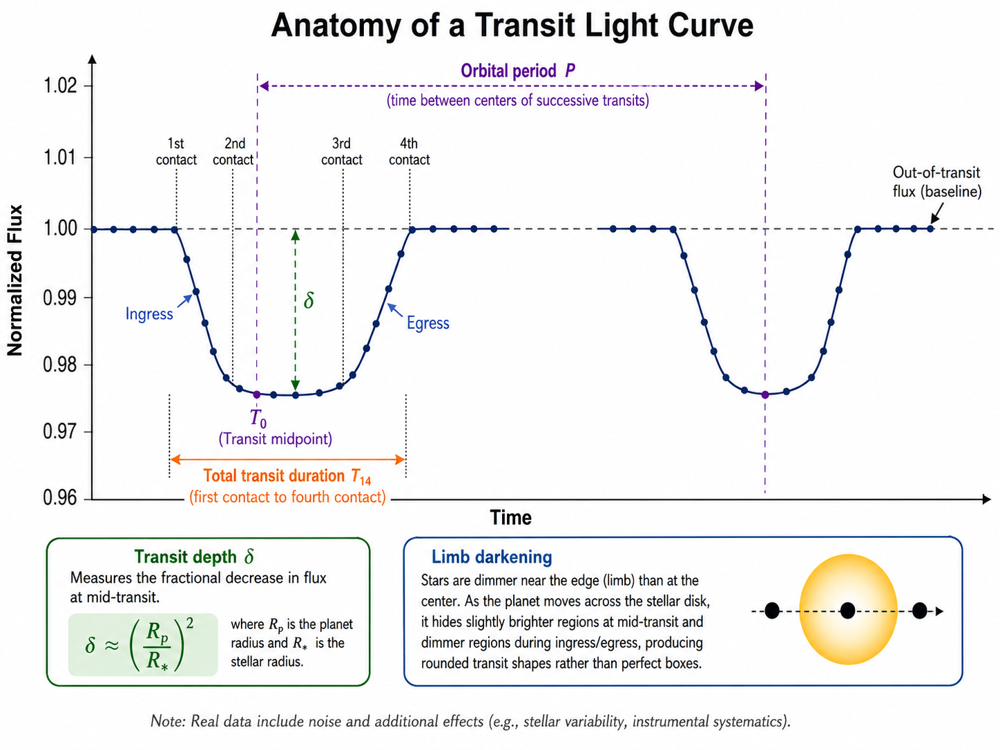
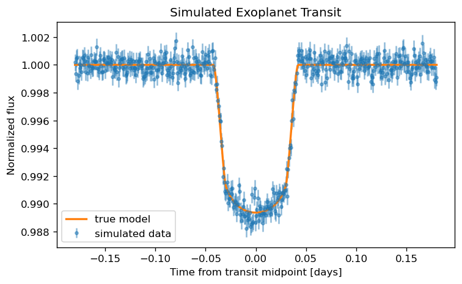
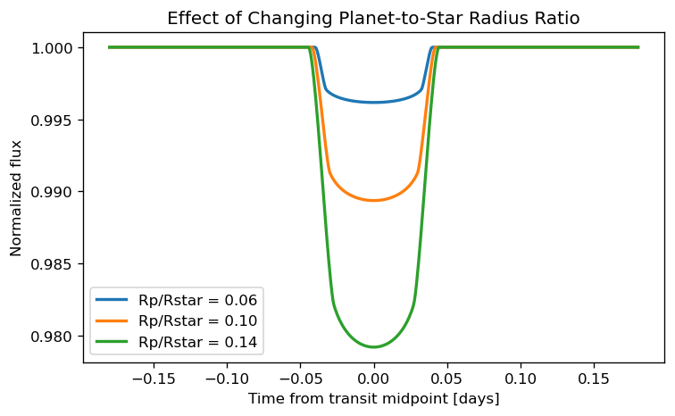
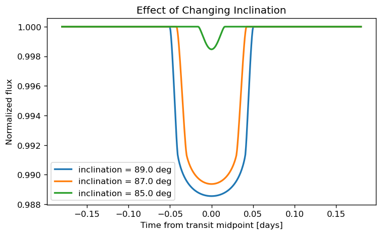
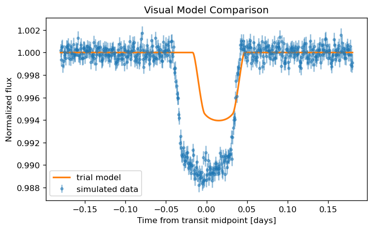
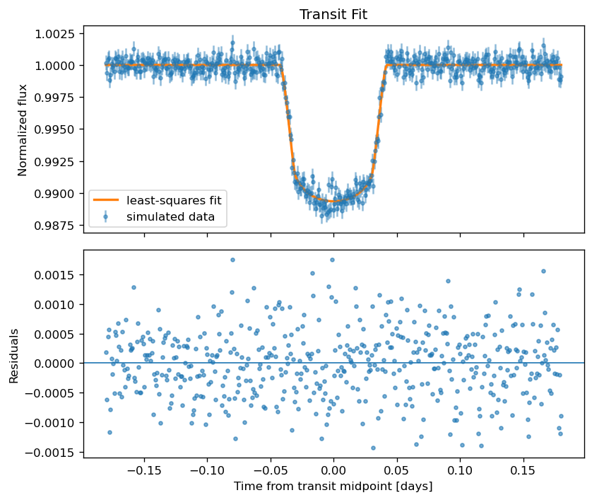
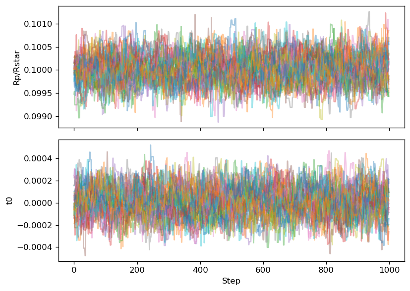

14. Modeling Exoplanet Transits#
This guide introduces the next step after finding, cleaning, detrending, folding, and inspecting an archival light curve. The goal is to move from a visible transit-like dip to a physical model with parameters that can be interpreted.
This guide is written for students who already have some experience with Lightkurve, Wotan, or AstroImageJ. You do not need to be an expert, but you should already understand what a light curve is, what a transit looks like, and why bad data points and long-term trends must be handled carefully.
Big picture
A transit model is not just a curve that looks nice. It is a physical hypothesis about the star, planet, orbit, noise, and data processing choices.
The examples below use simulated data first. That is intentional. Simulated data lets us know the true answer, which makes it easier to learn what each model parameter does.
14.1. What Transit Modeling Adds#
A cleaned and folded light curve can answer first-pass questions: Is there a dip? Does it repeat? Is the period stable? Does the signal look more like a transit, eclipsing binary, stellar rotation, or instrumental systematics?
Transit modeling goes further. It tries to estimate physical or geometric parameters such as the planet-to-star radius ratio, transit midpoint, orbital inclination, scaled semimajor axis, impact parameter, and limb-darkening behavior.
A transit model can help answer questions such as whether the observed depth is consistent with a planet-sized object, whether the transit time is shifted relative to a prediction, whether the event is V-shaped or U-shaped, and whether the residuals suggest stellar variability or systematics that are not captured by the simple model.
First warning
A model can produce precise-looking numbers even when the assumptions are wrong. Always inspect the data, the model, and the residuals before trusting fitted parameters.
In this guide, the workflow is:
Build a forward model with
batman.Fit the model with a simple optimizer.
Estimate uncertainties with
emcee.Discuss correlated noise and Gaussian processes.
Explain when a full probabilistic model with
exoplanetis worth the added complexity.
14.2. Transit Geometry and Parameters#
A transit happens when a planet passes in front of its host star from our point of view. During the transit, the planet blocks a small fraction of the star’s light, causing a dip in the light curve.
The simplest estimate of the transit depth is
where \(R_p\) is the planet radius and \(R_\star\) is the stellar radius. This approximation works best for a small dark planet crossing a uniform stellar disk. Real stars are limb darkened, so the exact transit shape depends on where the planet crosses the disk and how the stellar brightness changes from center to limb.
{kind=link}

Fig. 14.1 A schematic overview of transit geometry. This figure highlights the stellar radius \(R_\star\), the planet radius \(R_p\), the impact parameter \(b\), the semimajor axis \(a\), the scaled semimajor axis \(a/R_\star\), and the orbital inclination \(i\).#
What the light curve can and cannot know
The light curve directly constrains ratios and geometry more easily than absolute sizes. To convert a fitted planet-to-star radius ratio into a planet radius, you need an estimate of the stellar radius from somewhere else.
14.2.1. Period#
The period, usually written \(P\), is the time between repeated transits. For a planet on a stable orbit, the transit events should occur at nearly regular intervals. The period is usually found before detailed modeling by using a period search, a catalog ephemeris, or a folded light curve.
14.2.2. Transit midpoint#
The transit midpoint, often written \(t_0\), is the central time of a transit. This parameter matters because transit timing can be used to compare observations with a predicted ephemeris. A shifted midpoint can indicate an incorrect period, a timing-system problem, or in some cases transit timing variations.
14.2.3. Planet-to-star radius ratio#
The planet-to-star radius ratio, written \(R_p/R_\star\), controls the depth of the transit. Larger planets block more light. If the transit depth is about \(1\%\), then the rough radius ratio is \(\sqrt{0.01}=0.1\).
14.2.4. Impact parameter#
The impact parameter, usually written \(b\), describes how far from the center of the stellar disk the planet crosses, measured in units of the stellar radius. A central transit has \(b\approx 0\). A grazing transit has \(b\) close to 1. Larger impact parameters usually make the transit shorter and more V-shaped.
14.2.5. Scaled semimajor axis#
The scaled semimajor axis, written \(a/R_\star\), compares the orbital size to the stellar radius. It affects the transit duration. A planet farther from the star usually moves more slowly across the stellar disk and has a different duration for a given period and inclination.
14.2.6. Inclination#
The inclination, written \(i\), is the tilt of the orbit relative to the sky plane. A perfectly edge-on orbit has \(i=90^\circ\). Transits only occur when the inclination is close enough to edge-on for the planet to cross the stellar disk.
{kind=link}

Fig. 14.2 The impact parameter \(b\) and inclination \(i\) are closely related. As the inclination moves away from \(90^\circ\), the projected transit chord shifts farther from the center of the stellar disk, increasing \(b\). If the inclination becomes too low, no transit occurs.#
14.2.7. Limb darkening#
Stars are not uniformly bright disks. The center of a star usually appears brighter than the edge, or limb. Limb darkening affects the detailed curvature of the ingress, bottom, and egress of the transit. If the data are not high precision, limb darkening may be difficult to fit freely.
{kind=link}

Fig. 14.3 The anatomy of a transit light curve. This figure highlights the orbital period \(P\), the transit midpoint \(t_0\), the transit depth \(\delta\), the total transit duration \(T_{14}\), ingress, egress, and the role of limb darkening in shaping the rounded transit profile.#
The figure above connects the light-curve shape to the geometric parameters. The period determines the spacing between repeated transits, the midpoint sets the central transit time, the radius ratio controls the depth, and the combination of impact parameter, scaled semimajor axis, and inclination affects the duration and overall shape. Limb darkening mainly changes the detailed curvature of ingress, egress, and the bottom of the transit.
Beginner rule
For a first model, do not try to fit every parameter freely. Start with period fixed, eccentricity fixed to zero, and reasonable limb-darkening coefficients. Then add complexity only when the data justify it.
14.3. Preparing a Light Curve for Modeling#
Transit modeling only works as well as the light curve you give it. Before fitting a physical model, make sure the light curve has been cleaned, normalized, and restricted to the time region relevant to the transit.
14.3.1. Start from a cleaned Lightkurve light curve#
The modeling stage should usually begin after quality flags, obvious outliers, and problematic cadences have been handled. If you start from a raw or poorly cleaned light curve, the fitting code may spend its effort trying to model data problems instead of the transit.
A typical preparation workflow is: download the light curve, select the flux column, remove invalid values, apply a quality mask if needed, detrend carefully, normalize the flux, and then extract a time window around the transit.
14.3.2. Mask bad cadences#
Bad cadences can come from spacecraft events, scattered light, momentum dumps, saturation, cosmic rays, or processing artifacts. Do not assume that every point in a downloaded light curve is equally trustworthy.
14.3.3. Normalize flux#
Most transit models assume the out-of-transit flux is near 1.0. If the light curve is in electrons per second or another flux unit, normalize it before fitting.
14.3.4. Choose a time window around each transit#
For detailed fitting, it is often better to model a window around one transit or a stacked/folded transit instead of the full time series. The window should include enough out-of-transit baseline to define the local continuum.
14.3.5. Avoid over-detrending the transit#
Detrending is dangerous if the trend model is allowed to remove part of the transit. If you use Wotan, Lightkurve flattening, or another detrending method, mask the transit before estimating the trend.
Common failure mode
If a detrending filter sees the transit as part of the trend, it can make the transit shallower, narrower, or distorted. Always protect the transit when estimating the trend.
import numpy as np
import matplotlib.pyplot as plt
rng = np.random.default_rng(42)
# Simulated observation times centered on one transit.
time = np.linspace(-0.18, 0.18, 500)
# Adopt a constant uncertainty for this simple teaching example.
flux_err = np.full_like(time, 0.0006)
14.4. Forward Modeling with batman#
The batman package calculates exoplanet transit light curves from a set of transit parameters. It is a good first modeling tool because students can change one parameter at a time and immediately see how the transit shape changes.
Package note
If you are using Google Colab or a new environment, install the required packages before running the examples.
%pip install batman-package scipy emcee corner
14.4.1. Generate a simple transit model#
The code below generates a simple transit model. The values are not meant to describe a specific real system. They are chosen to produce a clear transit signal for learning.
import batman
params = batman.TransitParams()
params.t0 = 0.0
params.per = 3.5
params.rp = 0.10
params.a = 12.0
params.inc = 87.0
params.ecc = 0.0
params.w = 90.0
params.u = [0.3, 0.2]
params.limb_dark = "quadratic"
model = batman.TransitModel(params, time)
true_flux = model.light_curve(params)
observed_flux = true_flux + rng.normal(0.0, flux_err)
fig, ax = plt.subplots(figsize=(7, 4), dpi=120)
ax.errorbar(time, observed_flux, yerr=flux_err, fmt=".", alpha=0.5, label="simulated data")
ax.plot(time, true_flux, linewidth=2, label="true model")
ax.set_xlabel("Time from transit midpoint [days]")
ax.set_ylabel("Normalized flux")
ax.set_title("Simulated Exoplanet Transit")
ax.legend()
plt.show()

14.4.2. Change planet radius, inclination, and limb darkening#
Changing one parameter at a time is one of the best ways to learn what the model is doing. In the next example, we change the planet-to-star radius ratio, which mainly changes the transit depth.
fig, ax = plt.subplots(figsize=(7, 4), dpi=120)
for rp in [0.06, 0.10, 0.14]:
params.rp = rp
model = batman.TransitModel(params, time)
flux = model.light_curve(params)
ax.plot(time, flux, linewidth=2, label=f"Rp/Rstar = {rp:.2f}")
params.rp = 0.10
ax.set_xlabel("Time from transit midpoint [days]")
ax.set_ylabel("Normalized flux")
ax.set_title("Effect of Changing Planet-to-Star Radius Ratio")
ax.legend()
plt.show()

The next example changes the orbital inclination. Lower inclination moves the planet closer to the stellar limb during transit. Depending on the other parameters, this can shorten the transit and make the bottom less flat.
fig, ax = plt.subplots(figsize=(7, 4), dpi=120)
for inc in [89.0, 87.0, 85.0]:
params.inc = inc
model = batman.TransitModel(params, time)
flux = model.light_curve(params)
ax.plot(time, flux, linewidth=2, label=f"inclination = {inc:.1f} deg")
params.inc = 87.0
ax.set_xlabel("Time from transit midpoint [days]")
ax.set_ylabel("Normalized flux")
ax.set_title("Effect of Changing Inclination")
ax.legend()
plt.show()

14.4.3. Compare model and data visually#
A visual comparison is not a final fit, but it is an important first diagnostic. If the model is obviously too shallow, too deep, too narrow, too wide, or shifted in time, the initial parameter guesses should be improved before running a more expensive fitting procedure.
params.rp = 0.08
params.inc = 86.0
params.t0 = 0.015
trial_model = batman.TransitModel(params, time)
trial_flux = trial_model.light_curve(params)
fig, ax = plt.subplots(figsize=(7, 4), dpi=120)
ax.errorbar(time, observed_flux, yerr=flux_err, fmt=".", alpha=0.5, label="simulated data")
ax.plot(time, trial_flux, linewidth=2, label="trial model")
ax.set_xlabel("Time from transit midpoint [days]")
ax.set_ylabel("Normalized flux")
ax.set_title("Visual Model Comparison")
ax.legend()
plt.show()
params.rp = 0.10
params.inc = 87.0
params.t0 = 0.0

14.5. Fitting a Transit Model#
Fitting means finding parameter values that make the model match the data as well as possible. The simplest approach is to define residuals and use a least-squares optimizer.
Least-squares fitting is useful for getting a good first estimate, but it does not fully describe parameter uncertainties or correlations. It also assumes that the residuals are independent and roughly Gaussian.
14.5.1. Define residuals#
The residual is the difference between the observed flux and the model flux. If uncertainties are available, use normalized residuals:
where \(f_i\) is the observed flux, \(m_i\) is the model flux, and \(\sigma_i\) is the uncertainty for point \(i\).
from scipy.optimize import least_squares
def transit_flux(theta, time):
rp, inc, t0 = theta
fit_params = batman.TransitParams()
fit_params.t0 = t0
fit_params.per = 3.5
fit_params.rp = rp
fit_params.a = 12.0
fit_params.inc = inc
fit_params.ecc = 0.0
fit_params.w = 90.0
fit_params.u = [0.3, 0.2]
fit_params.limb_dark = "quadratic"
fit_model = batman.TransitModel(fit_params, time)
return fit_model.light_curve(fit_params)
def residuals(theta, time, flux, flux_err):
return (flux - transit_flux(theta, time)) / flux_err
14.5.2. Use least-squares fitting as a first pass#
In this example, we fit only three parameters: \(R_p/R_\star\), inclination, and transit midpoint. We keep the period, eccentricity, scaled semimajor axis, and limb darkening fixed. That is not because they are unimportant. It is because beginner models should start with a small number of free parameters.
initial_guess = np.array([0.09, 86.0, 0.01])
lower_bounds = np.array([0.02, 80.0, -0.05])
upper_bounds = np.array([0.20, 90.0, 0.05])
result = least_squares(residuals, initial_guess, bounds=(lower_bounds, upper_bounds), args=(time, observed_flux, flux_err))
best_rp, best_inc, best_t0 = result.x
best_flux = transit_flux(result.x, time)
print(f"Best-fit Rp/Rstar: {best_rp:.4f}")
print(f"Best-fit inclination: {best_inc:.3f} deg")
print(f"Best-fit transit midpoint: {best_t0:.5f} days")
Best-fit Rp/Rstar: 0.1000
Best-fit inclination: 87.015 deg
Best-fit transit midpoint: 0.00001 days
14.5.3. Inspect residuals#
After fitting, always inspect the residuals. A good fit should leave residuals that look like noise. Structured residuals can indicate an incorrect model, stellar variability, instrumental systematics, over-detrending, underestimated uncertainties, or a missing companion signal.
fit_residuals = observed_flux - best_flux
fig, axes = plt.subplots(2, 1, figsize=(7, 6), dpi=120, sharex=True)
axes[0].errorbar(time, observed_flux, yerr=flux_err, fmt=".", alpha=0.5, label="simulated data")
axes[0].plot(time, best_flux, linewidth=2, label="least-squares fit")
axes[0].set_ylabel("Normalized flux")
axes[0].set_title("Transit Fit")
axes[0].legend()
axes[1].axhline(0.0, linewidth=1)
axes[1].plot(time, fit_residuals, ".", alpha=0.6)
axes[1].set_xlabel("Time from transit midpoint [days]")
axes[1].set_ylabel("Residuals")
plt.tight_layout()
plt.show()

14.6. Parameter Uncertainty with emcee#
A least-squares fit gives one best-fitting answer. Research usually needs uncertainty estimates. MCMC methods estimate a distribution of plausible parameter values instead of only one best value.
The emcee package is a common MCMC tool in astronomy. It uses an ensemble of walkers that explore parameter space. The output is a chain of samples from the posterior distribution.
What MCMC is doing
MCMC does not magically prove that the model is correct. It estimates parameter uncertainty under the assumptions of the model, priors, likelihood, and noise model.
14.6.1. Define priors and likelihood#
For this example, we fit only \(R_p/R_\star\) and \(t_0\) while keeping inclination fixed at the least-squares value. This keeps the MCMC example short enough for beginners.
import emcee
def transit_flux_mcmc(theta, time):
rp, t0 = theta
fit_params = batman.TransitParams()
fit_params.t0 = t0
fit_params.per = 3.5
fit_params.rp = rp
fit_params.a = 12.0
fit_params.inc = best_inc
fit_params.ecc = 0.0
fit_params.w = 90.0
fit_params.u = [0.3, 0.2]
fit_params.limb_dark = "quadratic"
fit_model = batman.TransitModel(fit_params, time)
return fit_model.light_curve(fit_params)
def log_prior(theta):
rp, t0 = theta
if 0.02 < rp < 0.20 and -0.05 < t0 < 0.05:
return 0.0
return -np.inf
def log_likelihood(theta, time, flux, flux_err):
model_flux = transit_flux_mcmc(theta, time)
return -0.5 * np.sum(((flux - model_flux) / flux_err)**2 + np.log(2 * np.pi * flux_err**2))
def log_probability(theta, time, flux, flux_err):
prior = log_prior(theta)
if not np.isfinite(prior):
return -np.inf
return prior + log_likelihood(theta, time, flux, flux_err)
14.6.2. Run walkers#
The walkers start near the least-squares result. In a real project, run longer chains and check convergence more carefully. This short run is only a teaching example.
ndim = 2
nwalkers = 32
initial_position = np.array([best_rp, best_t0])
walker_start = initial_position + 1e-4 * rng.normal(size=(nwalkers, ndim))
sampler = emcee.EnsembleSampler(nwalkers, ndim, log_probability, args=(time, observed_flux, flux_err))
sampler.run_mcmc(walker_start, 1000, progress=True)
samples = sampler.get_chain()
print(f"Chain shape: {samples.shape}")
0%| | 0/1000 [00:00<?, ?it/s]
9%|██████▉ | 87/1000 [00:00<00:01, 869.80it/s]
17%|█████████████▋ | 174/1000 [00:00<00:00, 854.86it/s]
26%|████████████████████▌ | 260/1000 [00:00<00:00, 855.50it/s]
35%|███████████████████████████▍ | 348/1000 [00:00<00:00, 863.19it/s]
44%|██████████████████████████████████▎ | 435/1000 [00:00<00:00, 851.25it/s]
52%|█████████████████████████████████████████▏ | 521/1000 [00:00<00:00, 814.51it/s]
61%|████████████████████████████████████████████████ | 608/1000 [00:00<00:00, 831.39it/s]
69%|██████████████████████████████████████████████████████▋ | 692/1000 [00:00<00:00, 829.37it/s]
78%|█████████████████████████████████████████████████████████████▎ | 776/1000 [00:00<00:00, 832.13it/s]
86%|████████████████████████████████████████████████████████████████████ | 862/1000 [00:01<00:00, 838.35it/s]
95%|███████████████████████████████████████████████████████████████████████████ | 950/1000 [00:01<00:00, 849.33it/s]
100%|██████████████████████████████████████████████████████████████████████████████| 1000/1000 [00:01<00:00, 844.00it/s]
Chain shape: (1000, 32, 2)
14.6.3. Check chains#
A chain plot shows the parameter values sampled by each walker as a function of step number. The early part of the chain may depend strongly on the starting position. This early part is often discarded as burn-in.
labels = ["Rp/Rstar", "t0"]
fig, axes = plt.subplots(ndim, 1, figsize=(7, 5), dpi=120, sharex=True)
for i in range(ndim):
axes[i].plot(samples[:, :, i], alpha=0.4)
axes[i].set_ylabel(labels[i])
axes[-1].set_xlabel("Step")
plt.tight_layout()
plt.show()

14.6.4. Report posterior medians and credible intervals#
After discarding burn-in, flatten the chain and compute summary statistics. A common summary is the median with the 16th and 84th percentiles, which correspond roughly to a 1-sigma credible interval for a Gaussian-like posterior.
burnin = 300
flat_samples = sampler.get_chain(discard=burnin, flat=True)
for i, label in enumerate(labels):
q16, q50, q84 = np.percentile(flat_samples[:, i], [16, 50, 84])
lower = q50 - q16
upper = q84 - q50
print(f"{label}: {q50:.6f} -{lower:.6f} +{upper:.6f}")
Rp/Rstar: 0.100028 -0.000328 +0.000324
t0: 0.000007 -0.000135 +0.000134
Common MCMC checks
Before reporting MCMC results, check whether the chains mixed, whether the posterior is stuck near a prior boundary, whether the fitted model still leaves structured residuals, and whether the result changes when you use a different reasonable prior.
14.8. Full Probabilistic Modeling with exoplanet#
The exoplanet package is designed for probabilistic modeling of astronomical time-series data with a focus on exoplanets. It builds on PyMC, so it is a different level of complexity from the simple batman and emcee examples above.
14.8.1. When exoplanet is worth the complexity#
Use exoplanet when the project needs a more complete probabilistic model, such as a joint transit and radial-velocity fit, multiple planets, Gaussian-process stellar variability, transit timing variations, or careful posterior inference with physically motivated priors.
Do not start here if you are still unsure how to clean the light curve, mask bad cadences, normalize flux, protect the transit during detrending, or interpret the basic transit parameters.
14.8.2. PyMC model structure#
A PyMC model defines priors, deterministic relationships, a likelihood, and sampling instructions. The key idea is that the model is written as a probability model, not just as a function that returns a curve.
14.8.3. Transit model plus noise model#
A full model usually contains a transit component and a noise component. The transit component describes the astrophysical signal. The noise component describes measurement uncertainty, stellar variability, and instrumental systematics.
A conceptual structure is:
with probabilistic_model:
define priors for transit parameters
define priors for limb darkening
define the transit light-curve model
define a white-noise or Gaussian-process noise model
compare model to observed flux
sample the posterior
14.8.4. Posterior sampling#
Posterior sampling explores the range of parameter values that are consistent with the data and model assumptions. In modern PyMC workflows, this often uses gradient-based samplers rather than the ensemble sampler used by emcee.
14.8.5. Posterior predictive checks#
A posterior predictive check asks whether simulated data from the fitted model look like the observed data. This is one of the best ways to catch models that technically sample but do not actually describe the data well.
Recommended path
Learn batman first, then fit a simple model, then use MCMC with emcee, and only then move to exoplanet or PyMC-based modeling. The advanced tools make more sense after the simpler workflow is clear.
14.9. Common Mistakes#
Students often make similar mistakes when moving from light-curve inspection to transit modeling.
Fitting before cleaning: A model cannot rescue a bad light curve. Remove bad cadences, inspect quality flags, and check the baseline first.
Over-detrending: A detrending filter can remove part of the transit if the transit is not masked.
Fitting too many parameters at once: Start simple. Fix parameters when justified, then free them later if the data support it.
Ignoring limb darkening: Limb darkening affects transit shape. Poorly chosen coefficients can bias the result, especially for high-precision data.
Confusing precision with accuracy: Small error bars do not prove the model is correct.
Ignoring residuals: A fit can look good near mid-transit but leave structured residuals before or after transit.
Reporting too many digits: Report uncertainties and use a sensible number of significant figures.
Trusting MCMC without checking chains: Posterior samples are not useful if the walkers are stuck, poorly mixed, or dominated by prior boundaries.
Using a GP as a black box: A GP can absorb real signals if the kernel or timescale is inappropriate.
14.10. Research Log Template for Transit Modeling#
Use this template when modeling a transit. It is more detailed than a normal daily log because transit modeling has many choices that can affect the result.
# Transit Modeling Log: YYYY-MM-DD
## Target
- Target name:
- Mission/data source:
- Sector/quarter/campaign:
- Flux column used:
- Time system:
## Goal
-
## Light-curve preparation
- Quality flags removed:
- Outliers removed:
- Detrending method:
- Transit mask used during detrending:
- Normalization method:
- Time window used:
## Model setup
- Modeling package:
- Fixed parameters:
- Free parameters:
- Limb-darkening treatment:
- Eccentricity assumption:
- Noise model:
## Fit method
- Optimizer or sampler:
- Initial guesses:
- Priors:
- Number of walkers/chains:
- Number of steps/draws:
- Burn-in/tuning removed:
## Results
- Transit midpoint:
- Period:
- Rp/Rstar:
- Impact parameter or inclination:
- Other fitted parameters:
- Uncertainties:
## Diagnostics
- Residuals checked:
- Chain plots checked:
- Corner/posterior plot checked:
- Posterior predictive check:
- Any structured residuals:
## Questions or concerns
-
## Next steps
-
14.11. Supplemental Videos and Documentation#
Use these resources when you need a slower explanation, an official package reference, or examples of applied transit work. The first resources are about the transit method itself. The later resources are more advanced and are most useful after you already have a clean light curve and a simple transit model.
14.11.1. Transit method background#
Use these resources when you need the physical idea behind a transit light curve.
NASA: Exoplanet Detection, Transit Method
A concise NASA explanation of how the transit method detects exoplanets.NASA Scientific Visualization Studio: Exoplanet Transit Animations
Useful animations showing how transits change the observed brightness of a star.ESA: Detecting exoplanets with the transit method
A short visual explanation of how a planet passing in front of a star produces a periodic dip in brightness.
14.11.2. Applied transit work and Exoplanet Watch#
Use these resources when you want to connect transit modeling to real observations and student-accessible observing projects.
NASA Exoplanet Watch: How to Analyze Your Data
Practical instructions for analyzing exoplanet transit observations.NASA Exoplanet Watch Resources
A collection of resources for observers contributing transit measurements.NASA Exoplanet Watch Recordings
Recorded talks and tutorials related to exoplanet transit observing and analysis.
14.11.3. Package documentation#
Use the official documentation when you need syntax, examples, or details about package behavior.
batmandocumentation
Usebatmanfor generating fast transit light-curve models.emceedocumentation
Useemceefor Markov chain Monte Carlo sampling and parameter uncertainty estimation.celerite2documentation
Usecelerite2for fast one-dimensional Gaussian-process modeling of time-series data.exoplanetdocumentation
Useexoplanetfor full probabilistic modeling of astronomical time-series data with PyMC.exoplanettutorial gallery
Use the gallery when you are ready to study complete modeling workflows.exoplanet: A quick intro to PyMC
Start here before trying a fullexoplanettransit model.PyMC Gaussian process guide
Useful background for understanding Gaussian-process models in PyMC.
Advanced modeling warning
Do not start with exoplanet, Gaussian processes, or MCMC if you have not already inspected the light curve, checked the detrending, and fit a simpler transit model. Advanced models can produce impressive-looking results even when the input data or assumptions are wrong.
14.11.4. MCMC and emcee videos#
Use these resources when you want a slower explanation of what MCMC is doing before using emcee.
A Beginner’s Guide to Markov Chain Monte Carlo MCMC Analysis
A conceptual introduction to MCMC. Watch this before worrying about walkers, burn-in, or autocorrelation.Markov Chain Monte Carlo (MCMC) - Explained
A shorter conceptual explanation of MCMC sampling.Chris Fonnesbeck: An Introduction to Markov Chain Monte Carlo
A longer lecture-style introduction to MCMC and Bayesian sampling.
14.11.6. Full probabilistic modeling with exoplanet#
Use these only after you understand the simpler batman and emcee examples. The exoplanet workflow introduces PyMC, priors, posterior sampling, and model checking all at once.
The why and how of one domain-specific PyMC extension
An advanced talk/resource about why domain-specific probabilistic tools are useful in astrophysics.exoplanet: A quick intro to PyMC
A good first stop before building a full transit model withexoplanet.exoplanettutorial gallery
Complete examples of probabilistic modeling workflows.
Final rule
Do not treat a transit model as the first step. First get a clean, understandable light curve. Then build the simplest model that answers the research question.